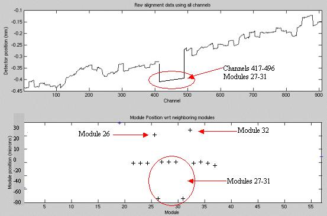

All 5 modules are out of alignment with the rest of the detector as seen on the top graph, yet modules 26, 27, 31, and 32 show out of alignment. This is further explained in the alignment wizard user instructions. Note this potential condition and see that it is the center 5 modules that all need to be repositioned as shown in the top graph. Modules 26 and 32 are effected due to the common edge with modules 27 and 31 and will show better results after the center set is repositioned.
Illustration 19: Center module offset example

See zalignmentWizard User Instructions for more details if needed.